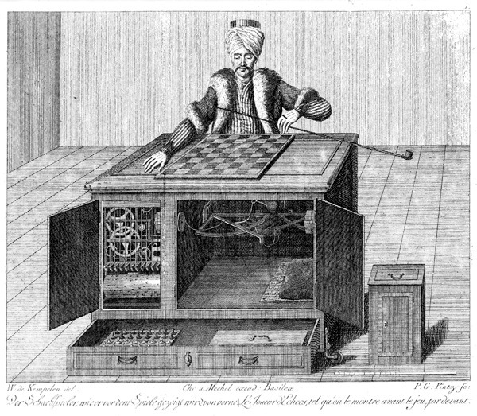
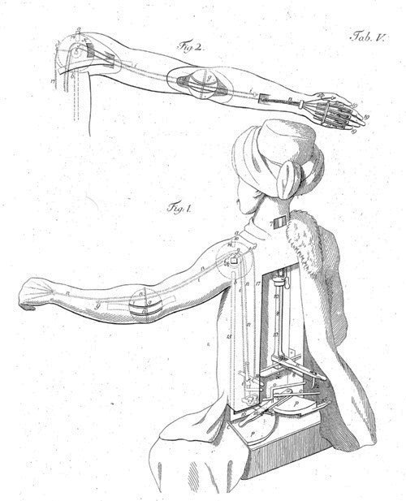
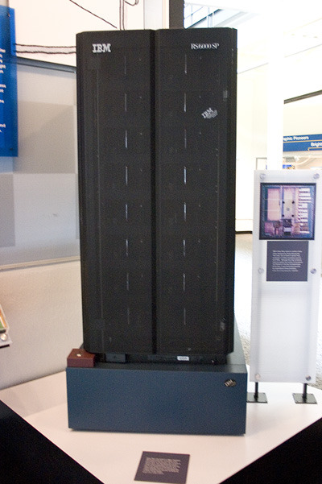
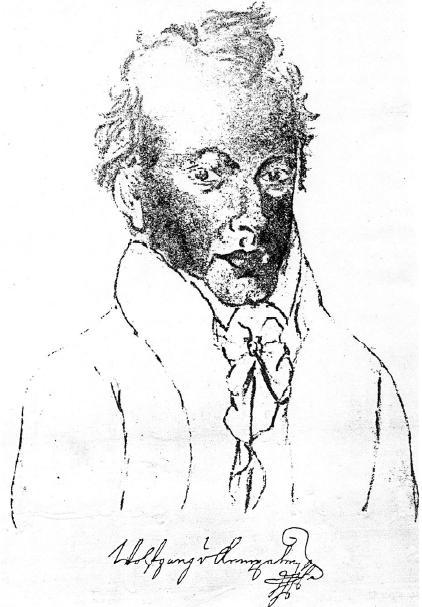
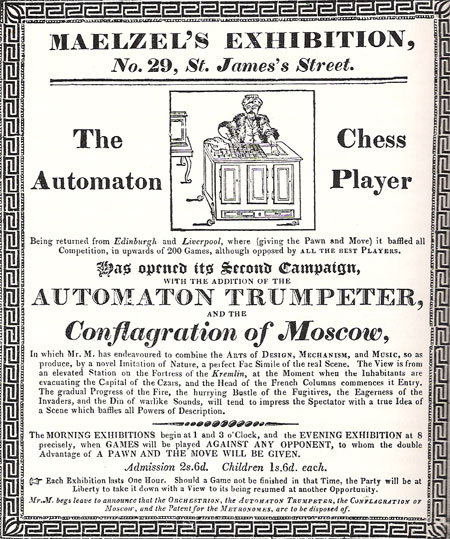
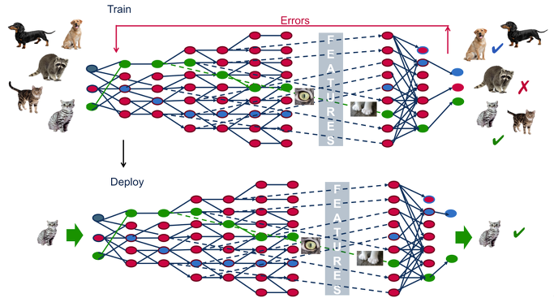
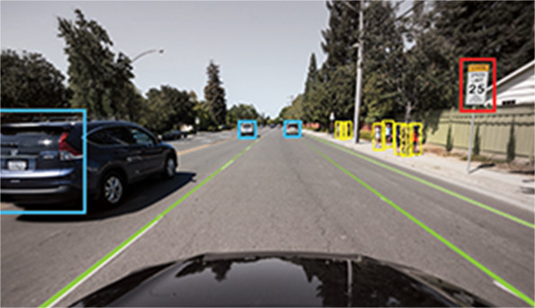

나폴레옹과 인공지능의 체스 대결 - Mechanical Turk 이야기
게시: 2017-11-26T22:43:17+09:00
1809년 나폴레옹이 오스트리아 빈을 두번째로 점령했을 때의 일입니다. 참혹했던 아스페른-에슬링 전투와 바그람 전투를 치르고 난 뒤 심신이 피폐했던 나폴레옹이 머물고 있던 쇤브룬 궁전에 색다른 여흥거리 하나가 찾아옵니다. 독일어로 Schachtürke(영어로는 chess turk, 또는 mechanical turk라고 알려졌습니다)라고 불리던 체스 두는 인공지능 기계였습니다. 맬젤(Johann Nepomuk Maelzel)이라는 독일 발명가가 가져온 이 기계는 39년 전인 1770년 만들어진 물건이며, 당시 그 첫번째 체스 상대는 나폴레옹도 잘 알고 있던 코벤츨(Ludwig von Cobenzl) 백작이었다고 했습니다. 코벤츨 백작은 나폴레옹이 대승을 거둔 마렝고 전투 이후 제2차 대불동맹전쟁을 끝내면서 맺은 루네빌(Lunéville) 조약에 서명한 오스트리아의 외무부 장관이었습니다.

(이것이 미케니컬 터크의 모습입니다. 대국을 시작하기 전에는 저렇게 상자 안을 열어 속에 사람이 없고 뭔가 복잡해보이는 톱니바퀴 장치가 잔뜩 있는 것을 보여주었다고 합니다. 흔히 마술사들이 쓰는 수법이지요.)
'체스 두는 투르크인'이라는 명칭의 이 기계의 모양새는 커다란 상자 형태의 탁자 한쪽 끝에 투르크인 인형의 상반신이 있고, 그 앞에 체스판이 놓인 형태였습니다. 원래 나폴레옹은 체스를 매우 즐기거나 잘 두는 편은 아니었는데, 이 기묘한 적수를 만나 나름 즐겁게 생각했던 듯 합니다. 이 기계의 주인인 맬젤은 투르크인에게 백마를 잡게 하여 제1수를 양보하는 것이 관례라고 했으나, 나폴레옹은 그런 규칙을 싹 무시했습니다. 대국이 시작되자, 투르크인 인형이 팔로 나폴레옹에게 거수 경례를 하며 경의를 표했는데도 나폴레옹은 자신이 백마를 잡고 제1수를 두었습니다.
기계 주인인 맬젤은 당황했으나, 투르크인은 당황하지 않았습니다. 정말 감정 없는 기계답게 투르크인은 그에 대응하여 착실하게 한수한수 대국을 이어갔습니다. 그러다 나폴레옹은 이 기계를 당황하게 만들어야겠다고 생각했는지 체스말에게 허락되지 않은 수를 두었습니다. 투르크인은 이 규칙 위반을 정확하게 파악하고는 나폴레옹이 움직인 말을 원래 위치대로 돌려놓았습니다. '어쭈'라고 생각한 나폴레옹은 다시 한번 규칙에 위배되는 수를 두었습니다. 그러자 투르크인은 아예 그 말을 집어 체스판 밖으로 밀어낸 뒤 대국을 계속 했습니다. 나폴레옹은 이렇게 2번 연달아 기계에게 '어디서감히 밑장을 빼?'라는 훈계를 들은 셈이었는데, 그럼에도 불구하고 3번째로 불법 수를 두었습니다. 그러자 투르크인은 '이제 막 나가자는 거지요 ?'라는 듯이 그 어눌한 기계팔을 스윽 움직여 체스판 위의 모든 말을 바닥으로 떨어뜨려버렸습니다.

(미케니컬 터크의 팔 구조도라고 하는데, 아마 그냥 상상도 같습니다.)
이건 당대 유럽 최고의 권력자인 나폴레옹에게 그 누구도 감히 해서는 안되는 불경스러운 짓이었습니다. 전해지는 바에 따르면 그럼에도 불구하고 나폴레옹은 이 당돌한 기계에 무척 즐거워했고, 이번에는 진지하게 꼼수를 쓰지 않고 새로 대국을 벌였는데, 19수 만에 말을 던지고 투르크인에게 패배를 인정했다고 합니다.
이 이야기는 1996년 IBM의 수퍼컴 Deep Blue가 당시 체스 세계 챔피언이던 카스파로프(Garry Kasparov)를 체스로 꺾은 뒤 인공지능에 대한 관심이 부쩍 높아지면서 나온 레빗(Gerald M. Levitt)의 책 "The Turk, Chess Automaton" 이라는 책에 나온 일화입니다. 여러분은 과연 나폴레옹과 이 19세기 초 인공지능 기계 이야기가 믿어지십니까 ?

(당시에는 꽤 떠들썩했던 인공지능 시스템, Deep Blue입니다. IBM은 chess에서 인간 챔피언을 꺾자, 그 다음으로는 자연어처리에 나서 미국 TV의 유명 퀴즈 쇼 Jeopardy에 도전, 결국 인간 챔피언을 꺾는 기염을 토했습니다. 그것이 요즘 뉴스에 자주 나오는 IBM의 인공지능 Watson입니다.)
실제로 이 체스 두는 투르크인 기계는 존재했던 것입니다. 어쩌면 나폴레옹과의 대국 이야기도 사실일 수 있습니다. 다만, 나폴레옹이 정말 이 기계가 인공지능으로 만들어진 것이라고 인식했는지는 불분명합니다. 나폴레옹과 전기, 나폴레옹과 잠수함 등등 나폴레옹은 당대의 영웅답게 이런저런 과학사 이야기에도 일화를 남겼는데, 확실한 것은 나폴레옹은 시대를 뛰어넘는 획기적인 과학에 대해서는 사실 별 관심이 없었다는 점입니다. 그는 매우 실용적인 사람이라서, 가령 미국인 풀턴이 제출한 잠수함 제안서를 한눈에 비현실적이라고 판단하고 무시했습니다. 그리고 그 판단이 맞았지요. 나중에 그 제안서를 덥석 받아들인 영국 해군은 괜히 돈과 시간만 날렸습니다. 그런 나폴레옹이 이 투르크인 인형을 진짜 인공지능이라고 생각했을 것 같지는 않습니다.
실제로 이 기계는 인공지능을 위해 만들어진 것이 아니라 일종의 마술 쇼를 위해 만들어진 것이었습니다. 이 기계의 시작은 1770년, 마리아 테레사(Maria Theresa) 시절의 쇤브룬 궁전에서 공연된 마술 쇼에 참석했던 헝가리인 발명가 켐펠렌(Wolfgang von Kempelen)이 자신도 뭔가 그럴싸 한 것을 만들어보겠다고 결심한 것에서 비롯된 것이었습니다. 결국 이 투르크인 상자는 그 속에 사람이 숨어 있는 일종의 마술 도구에 불과했습니다.

(켐펠렌의 초상화입니다. 그는 증기기관과 부교, 증기 터빈 엔진 등 발명가로서의 활약 외에, 합스부르크 오스트리아에서 서기직 공무원 생활을 했습니다. 결국 그의 인생에서 실질적으로 돈이 된 것은 역시 공무원 봉급이었다고 합니다. 퇴직할 때의 연봉이 5천 굴덴, 현재 가치로 약 3천7백만원이었다니까, 부자는 아니어도 짭짤한 수입이었지요. 노년에는 공무원 연금 개혁으로 인해 무척 곤궁하게 살았다고 전해집니다.)
어떻게 보면 어이없는 장난질이라고 생각하실 수도 있겠습니다만, 당시 기술력으로는 사람이 하든 뭘로 하든 그렇게 로봇 팔을 움직이는 것 자체가 꽤 어려운 일이었습니다. 무엇보다 상자 속에 숨어있는 사람이 상자 위에서 움직이고 있는 체스말의 위치를 정확히 파악하는 것 자체가 대단히 어려운 기술이었지요. 켐펠린은 그것을 일련의 자석 장치를 이용해서 해결했다고 합니다. 장기말에 붙은 자석이 상자 밑의 금속 조각들을 함께 움직여 그 속에 숨은 사람에게 장기 말의 위치를 알려주었다는 것이지요. 그게 말이 쉽지 실제 구현은 매우 어려웠을 것이고, 그 기술 자체가 아마 구경거리였던 모양입니다. 나폴레옹도 그런 점을 신기하게 생각하고 이 대국에 응했겠지요.
어쨌거나 이 체스 두는 투르크인 기계는 만들어진 이후 이런저런 쇼와 전시회에 동원되며 발명가인 켐펠렌에게 돈을 벌어다 주었습니다. 가령 런던에서는 5실링(현재 가치로 약 6만원)의 가격에 전시되었다고 합니다. 결과적으로 사람들은 안에 사람이 들어있는 마술 상자라는 것을 대충 눈치챘고, 그에 대한 기록을 남기기도 했습니다. 그런데 어쩌다 이 기계가 나폴레옹 앞까지 가게 된 것일까요 ?
켐펠렌이 1804년 사망하자, 전부터 이 마술 장치를 이용해 더 많은 돈을 벌 궁리를 하고 있던 맬젤이 이 기계를 그 아들로부터 구매했습니다. 원래 캠펠렌 생전에도 맬젤은 이 기계를 자신에게 팔라고 했었습니다. 그때는 캠펠렌이 무려 2만 프랑(약 2억원)을 요구했기 때문에 이루어지지 않았으나, 그 아들은 반값에도 기꺼이 이 거추장스러운 기계를 맬젤에게 넘겼지요. 그는 이 기계 투르크인을 이리저리 수리하고 개선하여 이런 신기한 장난감을 좋아하는 귀족에게 팔려고 했습니다. 그러자면 '이 기계로 말씀드릴 것 같으면...'이라고 광고할 소재가 필요했고, 그래서 온갖 연줄을 이용해서 나폴레옹에게 이 기계를 가져간 것입니다. 나폴레옹과 대국했던 인공지능 기계라는 것보다 더 멋진 광고 카피가 어디 있겠습니까 ? 나폴레옹은 머리가 좋은 편이었으니 좁은 상자 안에서 체스로 나폴레옹을 꺾는다는 것은 쉬운 일이 아니었을 것입니다. 그래서 맬젤은 당대 독일 최고의 체스 마스터였던 알가이어(Johann Baptist Allgaier)를 그 상자 안에 집어넣었고, 의도한 대로 나폴레옹의 항복을 받아낼 수 있었습니다.

(맬젤이 영국에서 벌인 체스 두는 투르크인 전시회의 광고입니다.)
결국 그의 작전은 대성공을 거두었다고 할 수 있습니다. 맬젤은 여기저기에 이 투르크인을 전시하며 분위기를 띄웠는데, 결국 2년 만인 1811년, 밀라노에서 당시 이탈리아 왕국의 부왕(viceroy)이던 나폴레옹의 양자 외젠(Eugène de Beauharnais)에게 이 물건을 3만 프랑이라는 거금에 팔 수 있었거든요. 이후의 시대는 아시다시피 나폴레옹 제국이 망하고 외젠도 이탈리아 왕국에서 쫓겨나 처가집인 바이에른 왕국에 얹혀 살게 되는 등 정치적 격변이 많은 시대였습니다. 이런 세월 속에서 이 투르크인 기계는 이리저리 팔려다니다 결국 미국까지 갔고, 어느 박물관에 전시되어 있다가 결국 화재로 소실되었습니다.
하지만 이 체스 두는 기계 투르크인은 여전히 꽤 유명한 이름으로 잘 알려져 있습니다. 특히 여러분이 요즘 각광받고 있는 기계 학습(machine learning)이나 심층 학습(deep learning)과 관계된 일을 하신다면 이 이름을 들어보셨을 수도 있습니다. 바로 전자상거래 업체이자 클라우드 컴퓨팅 업체인 아마존(Amazon)의 미케니컬 터크(Mechanical Turk, 기계 투르크인) 덕분입니다.

(딥 러닝이 뭔지 못 들어보셨다고요 ? 구글에서 검색해보시면 대충 나옵니다만, 일단 이 그림만 봐도 대충 뭔지는 감이 잡히실 겁니다. 아주 단순하게 말하면 그냥 사물의 특징을 추출해서 사물을 인식하는 알고리즘 같은 거라고 생각하시면 됩니다.)
아마존 미케니컬 터크는 바로 나폴레옹과 대국을 벌인 그 기계 투르크인에서 딴 이름이고, 그 본질은 일종의 크라우드 소싱(crowd sourcing)에 의한 인터넷 인력 장터(marketplace)입니다. 흔히 인력 시장이라고 하면 서울 변두리에서 새벽에 열리는 건설현장 노동자를 모집하는 곳을 떠올리실텐데, 사실 그런 것이 그대로 인터넷 온라인 상으로 옮겨온 것이라고 보셔도 됩니다. 아직은 인공지능이 제 궤도에 올라오지 않았기 때문에 많은 경우 사진 및 영상 속의 물건이나 풍경에 대한 설명 주석을 다는 것은 여전히 사람에게 의존해야 합니다. 그런 것을 해줄 사람을 온라인 상에서 찾고, 일처리도 온라인 상에서 하는 것이지요. 왜 이 온라인 인력 장터의 이름이 미케니컬 터크인지 쉽게 이해가 가실 것입니다. 댓가는 매우 저렴합니다. 어떤 경우는 한건에 10센트를 주는 경우도 있지만 대개 무료로 해줄 것을 부탁하는 의뢰주도 많고, 1센트 짜리 일도 종종 있습니다. 여기서 돈을 버는 것보다는 차라리 편의점 알바가 더 수지 맞고 또 정신 건강에도 더 좋습니다.
(아마존 미케니컬 터크에서 주어지는 일거리는 대부분 이런 것들입니다. 5센트 준다는군요.)
딥 러닝(deep learning)에 기반한 인공지능이 사람들의 직업을 뺴앗아갈 것이라는 우려가 있지요. 그건 분명히 걱정해야 할 일이라고 생각합니다. 다만 아직까지는 딥 러닝 덕분에 직업이 없어지는 것보다는 더 많은 직업이 생기고 있습니다. 다만 그 직업의 질은 양극화되고 있습니다. 딥 러닝을 비롯한 인공지능은 고도의 수학적 지식을 필요로 하는 분야입니다. 사실 이공계라고 다 취직이 잘 되는 것은 아니고 수학이나 물리학, 화학 같은 순수 과학 쪽은 취업이 역시 어려운 학과였습니다. 그러나 최소한 수학과 물리학 쪽 석박사는 없어서 못 뽑을 정도라고 하더군요. 딥 러닝에는 이런 박사급 인력 외에 정반대로 매우 단순한 작업자도 많이 필요로 합니다. 단순히 사진을 보고 이 사진 속 물체가 참새인지 트럭인지 최초 식별자를 붙이는 작업(data labeling)은 사람이 해야 하거든요. 아무리 인공지능이 참새 사진과 트럭 사진의 특징을 구별할 수 있다고 해도, 그 이름이 뭔지는 사람이 알려줘야 하니까요. 그러니까 과거엔 가정주부들이 남는 시간을 이용하여 집에서 인형 눈을 붙이거나 봉투를 발랐다면, 요즘엔 백수 청년들이 자기 방 PC 앞에 앉아서 사진 속 자동차 종류나 영화 배우 이름을 텍스트로 입력하는 것이지요. 그나마 아마존 미케니컬 터크에서 일을 수주하기 위해서는 일단 영어를 할 수 있어야 하고, 또 대개의 경우 미국 국적이 아닐 경우 일 수주를 하지 못한다고 알려져 있습니다.
물론 딥 러닝으로 인해 새로 생기는 일자리에는 아마존 미케니컬 터크와 같은 단순 업무만 있는 것은 아닙니다. 딥 러닝의 꽃이라고 할 수 있는 자동차 자율 주행의 경우 온갖 도로 상황에 대한 동영상이 있어야 신경망 훈련을 제대로 시킬 수 있습니다. 이런 데이터 수집은 결코 쉬운 일이 아닙니다. 아무리 전국의 수많은 차량들에 다 블랙박스 동영상이 수집되고 있다고 해도, 그걸 일일이 허락받고 수집하는 것에도 엄청난 시간과 비용이 들어갑니다. 게다가 어린애가 세발자전거를 타고 차 앞으로 갑자기 뛰어드는 동영상을 어디서 구한단 말입니까 ? 많은 경우, 그런 여러가지 상황의 동영상을 인위적으로 촬영해서 만들거나 아예 컴퓨터 그래픽으로 만들어내기도 합니다. 현재는 그런 업체들이 주로 중국이나 인도에 많다고 하더군요. 그런 영상 자료는 언어의 장벽에 구애받지 않고 만들 수 있으니, 그냥 저비용으로 만들 수 있는 곳에 주로 위탁하는 것이지요.

(자율주행에서는 차량에 탑재된 GPU 장치가 주변 차량 및 보행자, 신호등, 도로 표지판을 실시간으로 인식하고 판별해야 합니다. 여기엔 여러가지 기술적 어려움이 따르는데, 대표적인 것이 눈이 내릴 때 인식률이 절망적으로 떨어진다는 것입니다. 뿐만 아닙니다. 자율주행 차량이 본격 운행하면 반드시 못된 사람들이 도로 표시판에 뭔가 장난질을 쳐서 차량에 탑재된 인공지능에게 시련을 주려할 것이라는 우울한 예상도 예상 외로 큰 위협이라고 합니다.)
인공지능이 인간에게 어떤 축복이 될지 반대로 어떤 재앙이 될지는 아직 아무도 모릅니다. 그러나 확실한 것은 그냥 불안하고 무섭다고 외면할 수 있는 처지도 아니라는 것이지요. 우리가 안 하더라도 다른 사람이 하면 우리의 경쟁력만 떨어지니까요. 또 한가지 확실한 것은 인공지능에 의한 사회적 변화는 양극화라는 것입니다. 자본과 기술력을 가진 측과 단순 노동력만 갖춘 측과의 격차는 점점 벌어질 수 밖에 없습니다. 원래 경제학적으로는 수요 공급의 법칙에 의해 경쟁력이 떨어지는 상품은 시장에서 퇴출되어 사라져야 합니다. 그러나 인간은 상품이 아니므로, 시장에서 퇴출되더라도 절대 사라지지 않고 사회 주변부를 떠돌게 됩니다. 사람은 어떻게든 살아야 하고, 또 살 길이 없으면 스스로 찾게 되어 있습니다. 그 살 길이 어떤 것이 될지에 대해 고민하고 연구하는 것이 향후 인류의 주요 과제가 되지 않을까 합니다.
Source : https://en.wikipedia.org/wiki/Amazon_Mechanical_Turk
https://en.wikipedia.org/wiki/Amazon_Mechanical_Turk
https://www.mturk.com/mturk/findhits?match=false
https://en.wikipedia.org/wiki/Wolfgang_von_Kempelen
https://en.wikipedia.org/wiki/Johann_Nepomuk_Maelzel